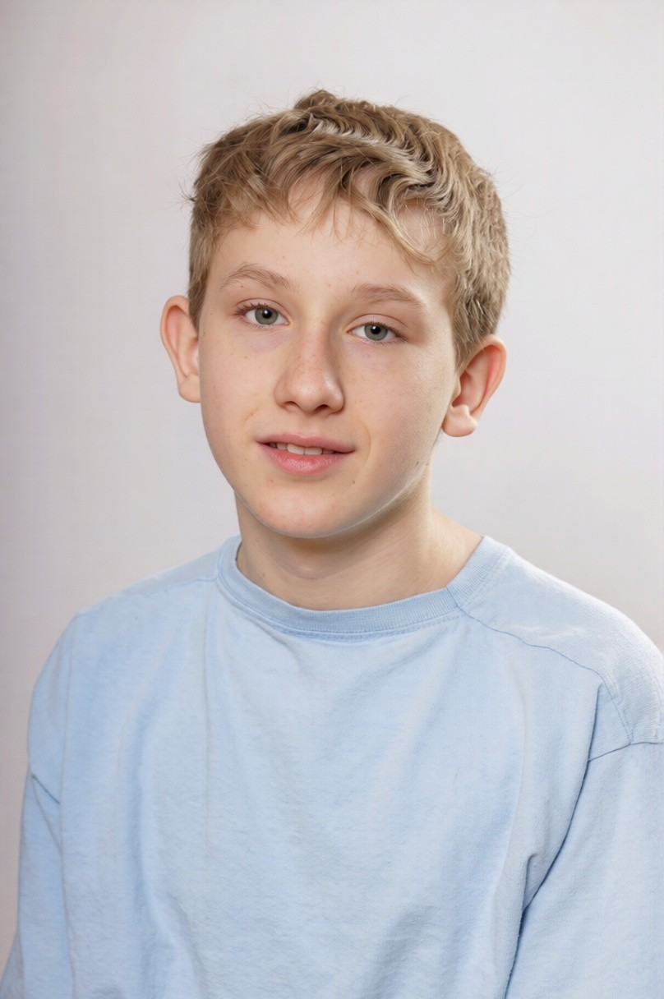

{{ post.date | date: "%d.%m.%Y" }}
📖 {{ read_time }} Min.
{{ post.title }}
{{ post.excerpt | strip_html }}
Ich bin Julian. Ich teile meine kreativen Ideen, Brandings und Web-Projekte sowie neue, spannende Blogartikel.

Frisch aus dem Gedankenkarussell gegriffen.
{{ post.excerpt | strip_html }}
Bisher wurden noch keine Blog-Artikel veröffentlicht.
Rechte gehen uns alle an – egal wie alt wir sind. Entdecke unser neues Portal, das Rechte für jeden verständlich erklärt.
Schutz, Bildung und Freizeit. Auf Augenhöhe und einfach erklärt für Kinder und Eltern.
Meinungsfreiheit, Gleichberechtigung und Würde. Die Säulen unserer Gesellschaft.
Deine Rechte im Netz. Von Datenschutz bis zum Schutz vor Cybermobbing.